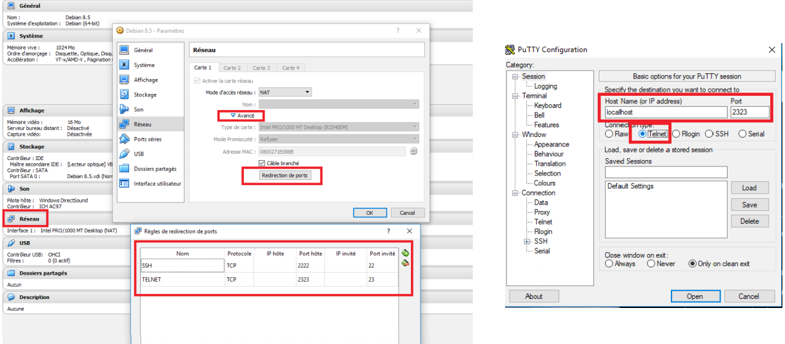
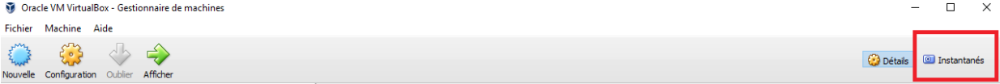

Fiche 1 : VirtualBox :
Introduction :
Pour ce cours, nous utiliserons des machines virtuelles avec la distribution Linux Debian. L'image utilisée sera debian-8.5.0-amd64-netinst récupérable sur Moodle.
Vous disposez à l'Institut d'une machine virtuelle de la sorte, mais vous pouvez également installer cette image dans VirtualBox si vous voulez travailler sur votre machine.
Les administrateurs systèmes connaissent bien les avantages de la virtualisation dans leur travail quotidien. Les avantages principaux sont la création rapide d'un environnement de test similaire à la production ainsi que la possibilité de réaliser des instantanéés (snapshot) avant toute modification. Cette dernière possibilité permet un retour en arrière aisé en cas de souci.
Installation de Debian 8.5 sous VirtualBox :
-
Installer VirtualBox.
-
Créer une nouvelle machine virtuelle Linux 64 bits que vous nommerez Debian 8.5.
-
Laissez les options proposées par défaut de VirtualBox.
-
Configurez le stockage dans VirtualBox pour que le périphérique CD vers l'image ISO debian-8.5.0-amd64-netinst (disponible sur Moodle → Ressources).
-
Lancez votre machine virtuelle et laissez vous guider par l'installeur Debian.
-
Langue : Français, Pays : Belgique, Clavier : Belge
-
Nom de machine : "cequevousvoulez"
-
Ne mettez pas de domaine !
-
Mot de passe root : ipl
-
Créez un compte utilisateur "votreprenom".
-
Partitionnement : utiliser le disque entier, tout dans une seule partition.
-
Site miroir : ftp.be.debian.org
-
N'installez aucun logiciel (décochez tout), aucun environnement de bureau, pas de serveur SSH, pas même les utilitaires du système !
-
Installez GRUB à l'endroit proposé (/dev/sda).
-
Installez les additions invités :
apt-get install build-essential dkms gcc linux-headers-`uname -r`Dans VirtualBox → périphériques → insérer le CD d'additions invité.
mount /dev/cdrommkdir /tmp/vboxaddcp -r /media/cdrom0/* /tmp/vboxadd/cd /tmp/vboxadd/./VBoxLinuxAdditions.run -
Installez le protocole telnet :
apt-get install telnetd
-
Accès à la machine virtuelle depuis votre machine :
Au niveau réseau, votre machine virtuelle Debian est configurée en NAT (cette notion sera abordée au cours de Laboratoire des réseaux). Via cette configuration, vous ne pouvez âs âr défaut accéder depuis votre machine (machine hôte) à la machine virtuelle Debian (machine invitée). Il est cependant utile de pouvoir accéder à votre machine invitée via le réseau afin de tester les différents services que vous installerez (Serveur Web, SSH, ...). Pour cela, il faut simplement configurer la redirection de port du NAT. L'idée est la suivante : faire correspondre un numéro de port de la machine hôte à un port de la machine invitée. Toutes les requêtes adressées alors sur le port de la machine hôte sont redirigées vers le port de la machine invitée.
Un exemple :
Environnement de test (pour les sujets) :
Il est souvent utile de reproduire en virtuel un environnement proche de la réalité. Celui-ci implique souvent le recours à plusieurs machines virtuelles. Exemple : pour tester un partage Samba présent sur un serveur Linux, il est utile d'avoir une machine virtuelle "client Windows".
Comment faire alors pour que ces deux machines virtuelles invitées communiquent entre elles ?
VirtualBox propose une solution simple : le host-only networking ou réseau privé d'hôte. En ajoutant une carte réseau configurée sur ce mode réseau, les machines virtuelles invitées pourront communiquer entre elles sans perturbation pour le "véritable" réseau physique connecté à la machine hôte. Il faudra cependant définir un réseau et des adresses IPs pour les machines virtuelles hôtes.
Fiche 2 : Résolution des problèmes :
Outils pour l'administrateur système :
Ce paragraphe est très important. Un administrateur système sera tôt ou tard conforté à des problèmes variés. Celui-ci doit donc disposer d'outils et de méthodes pour résoudre ces problèmes. Voici quelques pistes à ce sujet :
Consulter la documentation :
Vous trouverez beaucoup d'information sur Internet. Préférez évidemment la documentation se rapprochant le plus de votre distribution et version de distribution Linux. N'oubliez pas les pages man. Il existe également des pages "info" accessibles via le logiciel/paquet "pinfo".
Chaque paquet dispose d'une documentation spécifique qui est installée dans /usr/share/doc/"paquet". Si celle-ci est trop importante, le paquet est souvent accompagné d'un "paquet-doc" qu'il convient d'installer.
Sous les systèmes Debian, les logiciels sont le plus souvent instakkés dans /usr/share/"nomlogiciel" tandis que les fichiers de configuration se trouve dans /etc/"nomlogiciel".
Consultez les logs :
En cas de souci, la plupart des logiciels peuvent générés des logs qui sont stockés le plus souvent dans /var/log/"nomlogicieloupaquet".
Les distributions Linux actuelles utilisent le système d'initialisation "systemd". C'est celui-ci qui démarrera vos services/démons (apache par exemple). Il est donc utile de consulter les informations que systemd peut vous donner. Le journal de systemd peut être consulté via :
journalctl -xfRéseau :
Beaucoup de services/démons sont accessibles à distance et tournent donc sur un port réseau. Il est donc utile d'avoir un inventaire des services "réseaux" qui tournent sur votre machine. La commande netstat permet de réaliser ceci.
netstat -taupeLe fichier /etc/services permet également de vous montrer les ports déjà pré-réservés par le système.
Fiche 3 : APT - Gestion des packages :
Toutes les distributions Linux d'un système de gestion des packages permettant l'installation facile de logiciels et services. Ce système de gestion de packages résout en outre les problèmes de dépendances.
Fonctionnement :
Nous ne donnerons ici qu'un résumé du fonctionnement de l'outil APT, celui-ci étant abordé par le cours théorique. Différents dépôts contenant des paquets Debian (.deb) c'est-à-dire des logiciels (/etc/apt/sources.list) permettant de renseigner les dépôts à utiliser. Il suffit ensuite de mettre à jour depuis les dépôts (mise à jour du cache local) et de demander l'installation du logiciel à APT. L'outil installera automatiquement les dépendances nécessaires pour le logiciel demandé.
Backports :
La distribution Debian mise sur la stabilité et il est donc courant de ne pas avoir les dernières de logiciels. Cependant, si nous avons absolument besoin d'une version plus récente d'un logiciel, le dépôt Backports peut aider. Ce dépôt contient des paquets pour la version "testing" de Debian et sont donc plus récents mais moins stables.
La dernière solution reste une installation manuelle mais il faut alors savoir que les mises à jour ne se feront pas via un simple "apt-get upgrade" !
Pour ajouter les backports, ajoutez cette ligne à /etc/apt/sources/list :
deb http://ftp.debian.org/debian-backports mainUtilisation :
Mettre à jour depuis les dépôts :
apt-get updateInstaller un logiciel / supprimer un logiciel :
apt-get install <paquet1> <paquet2> ...
apt-get remove <paquet1> <paquet2> ...Rechercher un logiciel :
apt-cache search <word>Mettre à jour le système :
apt-get upgradeSécurité :
Les mises à jour des distributions Linux sont plus souvent assurées par l'outil APT. La prmeière règle en terme de sécurité informatique étant de garder un système le plus à jour possible, APT est un outil important pour se prémunir contre des attaques éventuelles.
L'administratioon système doit donc réaliser les mises à jour de son système régulièrement et en particulier les mises à jour de sécurité (correction de bogues, correction de failles, ...). Debian distingue ces mises à jour des autres (voir /etc/apt.sources.list), il est donc facile d'appliquer uniquement ces mises à jour.
Il est évidemment possible d'automatiser l'application des mises à jour via des outils tel que Cron.
Il existe même un paquet pour installer automatiquement et quotidiennement les mises à jour de sécurité.
apt-get install unattended-upgrades apt-listchangesFiche 4 : SSH :
Les systèmes Linux actuels sont le plus souvent gérés en ligne de commande (pas d'interface graphique) et à distance. Pour ce faire, on utilisait telnet mais ce protocole a le plus gros inconvénient de ne rien crypter. Une simple écoute réseau permet alors de récupérer le mot de passe root. SSH est venu remplacer telnet.
Fonctionnement :
Nous ne donnerons ici qu'un résumé du fonctionnement du protocole SSH, celui-ci étant abordé par le cours théorique. Le protocole SSH effectue un échange des clés de chiffrement avant d'utiliser cces dernières pour crypter toutes les communications entre le client et le serveur. Le port 22 est le port par défaut utilisé par SSH.
SSH est un service qui est initialisé/démarré par systemd.
Installation :
apt-get install sshConfiguration :
Le fichier de configuration client est /etc/ssh/ssh_config.
Le fichier de configuration serveur est /etc/ssh/sshd_config.
Par défaut, SSH est installé pour permettre une authentification par login et mot de passe pour tous les utilisateurs présents sur le serveur (y compris root).
Après avoir effectué une modification dans un fichier de configuration, il faut redémarrer le service pour que les modifications soient prises en compte.
/etc/init.d/ssh restart
OU
service ssh restart
OU
systemctl restart sshUtilisation :
Le client SSH a besoin des informations suivantes : un nom de machine ou une adresse IP, un login et un mot de passe. On peut remplacer l'authentification par login/mdp par une clé.
Comme client SSH, vous connaissez sans doute déjà le client SSH Windows par excellence : Putty.
Sous Linux :
ssh nomutilisateur@nommachineOUadresseIPSécurité :
Il est possible de configurer le serveur SSH pour interdire l'usage du compte root pour les connexions SSH. L'option "PermitRootLogin" doit être positionnée à "No" dans le fichier de configuration du serveur SSH.
Il est égalementy possible de restreindre l'utilisation que depuis certaines machines et qu'avec certains utilisateurs.
AllowUsers olivier@192.168.1.*
AllowUsers admin bobIci, les utilisateurs admin et bob sont uniquement autorisés et l'utilisateur olivier depuis le sous-réseau 192.168.1.0/24.
Copie de fichiers :
Il est à noter que dès que vous avez accès à SSH, vous pouvez copier des fichiers entre votre machine hôte et invitée via SCP/SFTP. Ceci peut se faire avec le logiciel WinSCP (Windows) ou Cyberduck (Mac).
Gestion des utilisateurs :
adduser-deluser-addgroup-delgroup :
Ces commandes sont suffisamment explicites. Consulter la documentation à ce sujet pour connaître les options intéressantes. Il esy à noter que AddUser crée un profil pour l'utilisateur basé sur un squelette situé dans /etc/skel. Par défaut, la home directory créée par adduser est accessible en lecture à tout le monde (voir /etc/adduser.conf). Attention, ceci peut ne pas correspondre à votre politique de confidentialité.
SU :
Cette commande permet de changer d'utilisateur. Sans argument, cela permet de devenir root.
su adminSUDO :
La commande sudo a pour objectif de permettre à des utilisateurs d'exécuter des commandes en tant que superutilisateur.
Fonctionnement :
Pour qu'un utilisateur puisse exécuter une commande avec "sudo", il doit faire partie du groupe sudo.
Installation :
apt-get install sudoConfiguration :
Par défaut, un utilisateur ajouté au groupe sudo possède les mêmes privilèges que root. On peut cependant changer ce comportement dans le fichier de configuration /etc/sudoers. On peut par exemple faire en sorte qu'un utilisateur ne puisse exécuter que certaines commandes.
Le fichier /etc/sudoers s'édite via la commande particulière visudo.
sudo visudoUtilisation :
Pour ajouter un utilisateur au groupe sudo :
adduser toto sudoPour vérifier l'appartenance d'un utilisateur au groupe sudo :
groupsPour permettre à un utilisateur d'exécuter une commande privilégiée ("root"). Ajoutez une ligne dans le fichier /etc/sudoers.
user_name ALL=NOPASSWD: /usr/bin/apt-get installPasswd :
Il est possible de verrouiller ou de désactiver le compte root. Verrouiller le compte root empêche simplement de pouvoir se connecter directement avec le compte root tandis que la désactivation le rend totalement inutilisable.
Pour verrouiller le compte root :
sudo passwd -l rootPour désactiver le compte root :
sudo usermod --expiredate 1 rootOn peut cependant encore utiliser le compte root via :
sudo -sSécurité :
SUDO :
Les avantages du SUDO sont les suivants :
-
Permettre à des utilisateurs d'exécuter une commande en tant que superutilisateur sans devoir le mot de passe de root.
-
Travailler en mode non privilégié et n'utiliser le mode privilégié que quand cela est nécessaire. Ceci réduit le risque de commettre des dommages pour les systèmes.
-
Contrôler et enregistrer qui fait quoi (SUDO enregistre toutes les commandes sudo effectuées dans /var/log/auth.log).
-
Renforcer la sécurité. En désactivant le compte root et en le remplaçant par un compte "sudo" un attaquant ne connaîtra pas lemot de passe mais également le nom du compte !
Politique de sécurité des mots de passe :
Il est important d'avoir des mots de passe assez solides et de s'assurer qu'ils ne pourront pas être facilement "crackés". Les systèmes Linux ont une sécurité de mot de passe pare défaut pour les utilisateurs normaux. Les mots de passe doivent avoir une longueur de 6 caractères minimum. Ceci peut s'avérer assez faible comme sécurité.
Cette politique de sécurité peut être améliorée notamment ceci :
-
Imposer un minimum de 8 caractères pour les mots de passe.
-
N'autoriser que x essais pour le mot de passe.
-
Imposer un nombre minimum de caractères différents lors du changement de mot de passe.
-
Fixer une durée de vie minimale et maximale du mot de passe (adduser).
La politique de sécurité se gère au moyen du module PAM (Pluggable Authentication Module) sous Linux. Pour améliorer la politique de sécurité, on peut installer le paquet suivant :
apt-get install libpam-cracklibEnsuite, dans le fichier de configuration de PAM : /etc/pam.d/common-password.
password requisite pam_cracklib.so retry=3 minlen=8 difok=3-
retry → nombre de tentatives autorisées.
-
minlen → nombre de caractères pour le mot de passe.
-
difok → nombre de caractères différents entre ancien et nouveau mot de passe.
Fiche 6 : Apache :
Apache reste un Serveur Web incontournable. Nous allons voir ici comment l'installer et le configurer pour un environnement de production.
Fonctionnement :
Le principe de fonctionnement d'Apache2 repose sur l'utilisation de modules. En effet, il suffit d'installer et/ou d'activer des modules suivant nos besoins. Il existe un module pour PHP, pour activer SSL, pour une authentification LDAP, ...
Apache2 est un service qui est initialisé/démarré par systemd. Pour redémarrer le service :
/etc/init.d/apache2 restart
OU
service apache2 restart
OU
systemctl restart apache2En production, un serveur Apache s'occupe de servir plusieurs sites Web et/ou de serveur HTTP frontal. Ces deux points seront abordés ci-dessous.
Installation :
apt-get install apache2 apache2-docL'installation crée un compte et un groupe www-data. Apache2 focntionne par défaut sur ce compte et groupe pour des raisons de sécurité et tourne sur le port 80. Un site de base (page HTML) est placée dans /var/www ce qui permet de tester directement Apache2 après son installation : http://adresseip. Il est à noter que si vous voulez tester Apache sur un serveur ne disposant pas d'interface graphique (et donc pas de navigateur classique), vous pouvez installer lynx qui est un navigateur en mode texte (c'est moche mais cela permet de tester !).
Configuration :
Modules :
Apache dispose de nombreux modules. Nous n'en ferons pas l'inventaire ici. Nous nous contenterons d'en citer 3, très utilisés : rewrite (frameworks MVC), proxy_http, ssl.
Pour activer un module, il suffit d'utiliser la commande "a2enmod" (apache2 enable module). Il existe la commande réciproque "a2dismod". N'oubliez pas de redémarrer le service apache2 après activation du module.
a2enmod <<module>>Configuration PHP :
Apache peut être configuré pour servor des pages PHP. Il suffit d'installer PHP ainsi que le module PHP pour apache et de redémarer le service apache2.
apt-get install php5 php5-mysql libapache2-mod-php5Attention, au moment où j'ai eu ce cours à l'école, on était à la version 5 de PHP. Donc, vous devrez peut-être modifier la commande ci-dessus en remplaçant la version 5 par la version actuelle de PHP.
Virtualhosts :
Les virtualhosts permettent de déployer plusieurs sites Web sur un même serveur (même adresse IP). La distinction se fait en général sur le nom du site, Apache doit en effet savoir suivant l'url quel site il doit présenter.
L'ajouter d'un vhost se fait en créant un fichier dans /etc/apache2/sites-available/"monsite.conf" et puis d'y insérer :
<VirtualHost *:80>
ServerName monsite.be
ServerAdmin webmaster@localhost
DocumentRoot /var/www/htdocs/monsite
ErrorLog ${APACHE_LOG_DIR}/monsite_error.log
CustomLog ${APACHE_LOG_DIR}/monsite_access.log combined
<Directory /var/www/htdocs/monsite>
Require all granted
AllowOverride All
</Directory>
</VirtualHost>Directives :
La directive "ServerName" est nécessaire pour qu'Apache fasse une distinction sur le nom du site. Toute URL comportant "monsite.be" utilisera ce vhost.
La directive "ServerAdmin" permet de préciser le responsable du site.
La directive "DocumentRoot" permet de préciser l'endroit où se trouve l'arborescence du site.
Les directives "ErrorLog" et "CustomLog" permettent de préciser où les logs seront stockés.
On peut ensuite apliquer des règles/restrictions sur le site via la directive "Directory". Ici, on autorise tout le monde à voir le site "Require all granted" et on autorise les utilisateurs à redéfnir ces règles "AllowOverride All". Ceeci permet par exemple de définir des .htaccess.
La directive "Require" peut autoriser ou interdire des adresses IPs, des utilisateurs, ...
Exemples :
# n'autoriser l'accès au site que depuis localhost
require ip localhost
# accès uniquement au site pour l'utilisateur admin
# pas de redéfinition possible (pas de .htaccess)
AllowOverride NonePour activer le vhost, il suffit d'utiliser la commande "a2ensite" (apache2 enable site). Il existe la commande réciproque "a2dissite". Ne pas oublier de redémarrer le service apache2 après activation.
a2ensite monsiteReverse proxy :
Un proxy inverse est un serveur frontal, c'est-à-dire un serveur exposé sur Internet et par lequel toutes les requêtes passeront. Ce serveur ne traitera pas le requêtes mais se contentera de les rediriger vers d'autres serveurs internes à l'entreprise. Les intérêts de ce mécanisme sont multiples. Vu qu'il n'y a qu'un seul point d'accès, la sécurité est plus facile à gérer. Cela permet également de mettre en oeuvre du "load balancing" entre des serveurs internes. C'est également un moyen simple de rendre disponible un serveur interne sur le Web (pas besoin de configuration réseau).
Pour mettre en place un reverse proxy, il faut activer le modime apache "proxy_http" et "proxy".
a2enmod proxy proxy_httpEnsuite, dans le fichier VirtualHost :
<VirtualHost *:80>
ServerName siteReverseProxy
ServerAdmin webmaster@localhost
ProxyPass / http://www.example.com/
ProxyPassReverse / http:/www.example.com
ErrorLog ${APACHE_LOG_DIR}/siteReverse_error.log
CustomLog ${APACHE_LOG_DIR}/siteReverse_access.log combined
</VirtualHost>Sécurité :
Un serveur Web doit être sécurisé en particulier les échanges entre le client et le serveur doivent être cryptés. Ceci se fait aisément grâce au paquet openssl. Le port par défaut pour les communications HTTPS est le 443.
Installation :
apt-get install openssl
a2enmod ssl
systemctl restart apache2Création d'un certificat auto-signé :
La commande openssl permet de ccréer un certificat ainsi qu'une clé associée à ce certificat.
openssl req -x509 -nodes -days 365 -newkey rsa:2048 -keyout /etc/apache2/ssl/apache.key -out /etc/apache.crtIci, la clé et le certificat seront déposés dans le répertoire /etc/apache2/ssl créé au préalable.
Le VirtualHost sera modifié de la sorte :
<VirtualHost *:443>
ServerName monsite.be
ServerAdmin webmaster@localhost
DocumentRoot /var/ww/htdocs/monsite
ErrorLog ${APACHE_LOG_DIR}/monsite_error.log
CustomLog ${APACHE_LOG_DIR}/monsite_access.log combined
SSLEngine on
SSLCertificateKeyFile /etc/apache2/server.key
<Directory /var/www/htdocs/monsite>
Require all granted
AllowOverride All
</Directory>
</VirtualHost>Let's encrypt :
Let's encrypt est une autorité de certification libre, gratuite et automatisée. Ceci permet d'obtenir un certificat valide pour son site Web sans trop d'effort. Cependant, la machine servant le site Web doit être "publiquement" accessible ainsi que le nom du domaine. Cela veut dire qu'en test ce procédé n'est pas applicable.
Fiche 7 : MySQL :
MySQL :
apt-get install mysql-server mysql-clientIl faudra donner un mot de passe sûr au compte root de MySQL.
mysql -u utilisateur -p base_exportee < base_exportee.sqlInjecter un fichier SQL.
PHPMyAdmin :
apt-get install phpmyadminTestez ensuite phpmyadmin → http://adresseip/phpmyadmin.
Fiche 8 : Planification de tâches :
Un administrateur système a régulièrement besoin d'outils pour exécuter des tâches récurrentes (mises à jour quotidiennes, backup quotidien, ...). Différents outils existe sous Linux pour réaliser ceci.
Cron :
Cron est un démon capable d'exécuter des tâches planifiées et récurrentes. Chaque utilisateur possède une "crontab", c'est-à-dire une table reprenant les commandes que l'utilisateur souhaite exécuter et à quel moement.
Utilisation :
Pour édier sa propre crontab :
crontab -eLe format de la crontab est le suivant :
#Format
#min heure jourDuMosis mois jourSemaine commande* peut être utilisé à la place d'une valeur iniquée qu'il s'agit de toutes les valeurs.
Des raccourcis fréquemment utilisés existent pour les cinq premières colonnes :
-
@yearly
-
@monthly
-
@weekly
-
@ldaily
-
@bhourly
-
@reboot
La sortie standard et d'erreurs de la commande utilisée dans la crontab peut être redirigée et envoyée vers un fichier de log.
@reboot apt-get update >> /var/log/update.logIl est à noter qeue si la machine n'est pas allumée au moment où la tâche a été planifiée, celle-ci ne sera jamais exécutée.
AT :
La commande at permet l'exécution d'une commande à un moment ultérieur. Celle-ci sera exécutée dès que l'horloge atteindra l'heure donnée. Si la machine n'est pas en ligne à ce moment, la commande sera réalisée dès que celle-ci sera en ligne.
at 10:00 2017-12-31 apt-get updateSéance 1 :
Préliminaires :
Pour ce cours, vous pouvez utiliser VirtualBox pour créer votre propre machine virtuelle Debian 8.5 ou utiliser la machine virtuelle Debian 8.5 de l'école. Si vous voulez utiliser VirtualBox, référez-vous à la fiche 1.
Exercice 1 :
-
Faites un instantané (si vous travaillez sur votre machine).
 -
Connectez-vous à votre serveur (machine virtuelle Debian) via le protocole telnet avec l'aide de Putty et avec votre nom d'utilisateur (lambin → azerty ou compte créé lors de l'installation → "votreprenom").
-
Vous ne pourrez pas vous connecter avec le compte root.
-
Une fois connecté → passez en root (mdp: azerty).
-
-
Afin d'optimiser le temps de téléchargement des paquets, adaptez la configuration de l'outil APT pour qu'il utilise le site miroir qu'il utilise le site miroir ftp.belnet.be.
-
Le dépôt des mises à jour de sécurité (security.debian.org) ne doit pas être changé.
/etc/sources.list remplacer ftp.be.debian.org par ftp.belnet.be
-
-
Mettez à jour votre système.
apt-get update && apt-get upgrade -
Mettez en place les mises à jour de sécurité automatiques.
apt-get install unattended-upgrades apt-listchanges -
Installez Vim et Midnight Commander sur votre serveur.
apt-get install vim mc -
Installez SSH sur votre serveur.
apt-get install ssh -
Connectez-vous à votre serveur via SSH.
-
Faites un instantané (si vous travaillez sur votre machine).
-
Supprimez l'usage des connexions telnet.
-
Comment faire et comment s'en assurer ?
apt-get remove telnetd # pour s'assurer que le service telnet a bien été suprimé et ne tourne plus netstat -taupe
-
-
Créez trois comptes utilisateurs : admin, ip et superuser. (Lisez bien les exigences ci-dessous avant de vous lancer et notez les mots de passe que vous employez pour ces comptes !!!).
-
Définissez une politique de sécurité des mots de passe et appliquez-la.
-
Les profils des utilisateurs (home directories) sont privés (politique de confidentialité).
Voir DIR_MODE /etc/adduser.conf → privé → 0700 -
Tous les utilisateurs créés devront avoir automatiquement le fichier CharteUtilisation.txt (récupérable sur Moodle) dans leur home directory.
Tout fichier placé dans /etc/skel sera copié dans la home directory de l'utilisateur lors de l'appel à adduser. -
Proposez une configuration par défaut pour vim (set number, ...) ou nano pour tous les utilisateurs que vous créez.
Placer un fichier .vimrc dans /etc/skel contenant par exemple set number -
Quelle est la différence entre "adduser" et "useradd" ? Quelle commande fau-il préconiser ?
adduser appelle useradd mais propose des services en plus (voir ci-dessus et /etc/adduser.conf). adduser est donc une surcouche de useradd.
-
-
Faites en sorte que seul le compte admin et superuser puisse se connecter en SSH.
/etc/ssh/sshd_config AllowUsers admin superuser -
Faites un instantané (si vous travaillez sur votre machine).
-
Faites en sorte que le compte admin soit le nouveau compte administrateur (le nouveau "root").
apt-get install sudo # ajouter le compte admin au groupe sudo adduser admin sudo -
Verouillez le compte root.
sudo passwd -l root -
Créez deux comptes : getuser1 et getuser2 qui pourront uniquement ajouter des utilisateurs.
/etc/sudoers # getusers est un groupe dans lequel aura été placé getuser1 et getuser2 %getusers ALL=NOPASSWD: /usr/sbin/adduser -
Lisez cet article : http://www.bbc.com/news/technology-40875534
-
Créez un script interactif qui permettra de créer un utilisateur de type "getuser" ou "normal". Le script demandera également s'il faut un accès SSH. Ce script doit faciliter l'application de votre politique de sécurité des mots de passe ainsi que votre politique de confidentialité des profils utilisateurs (ceux-ci doivent être privés).
-
Bonus : Créez un script pour contrôler l'activité du compte admin.
-
Commencez par réfléchir à ce qu'il est utile de contrôler !
-
Séance 2 :
Préliminaires :
Pour ce cours, vous pouvez utiliser VirtualBox pour créer votre propre machine virtuelle Debian 8.5 ou utiliser la machine virtuelle Debian 8.5 de l'école. Si vous voulez utiliser VirtualBox, référez-vous à la fiche 1.
Exercice 1 : Apache début :
Nous allons créer un serveur LAMP (Linux Apache MySQL PHP) de production avec deux sites Web. Le site http://sitehtml/ renverra vers une page HTML contenant "coucou" et http://sitePHP/ renverra vers le site des bonnes nouvelles. Vous trouverez ce site dans les ressources sur Moodle.
-
Installez un serveur apache2.
apt-get install apache2 apache2-doc -
Configurez apache2 que http://sitehtml/ renvoie vers une page HTML contenant "coucou".
-
Gardez à l'esprit que toute URL va être envoyée à un serveur DNS pour traduction ! http://sitehtml/ doit renvoyer l'adresse IP de votre serveur. Comment réaliser cela sans toucher à la configuration DNS ? Rappelez-vous du processus de résolution des noms DNS !
#/etc/apache2/sites-available/siteHTML.conf <VirtualHost *:80> ServerName siteHTML ServerAdmin webmaster@localhost DocumentRoot /var/www/siteHTML ErrorLog ${APACHE_LOG_DIR}/monsite_error.log CustomLog ${APACHE_LOG_DIR}/monsite_access.log combined <Directory /var/www/siteHTML> Require all granted AllowOverride All </Directory> </VirtualHost>a2ensite siteHTML/etc/hosts 127.0.0.1 siteHTML
-
-
Installer Lynx (un navigateur Web en mode texte).
apt-get install lynx -
Tester le site HTML sur votre machine Debian avec Lynx.
lynx siteHTML -
Tester ensuite sur votre machine hôte (si vous travaillez avec VirtualBox).
# rediriger le port 8080 vers 80 dans VBOX Firefox → http://siteHTML:8080 -
Configurez apache2 pour http://sitePHP/ que renvoie vers le site des bonnes nouvelles de Mr Collinet.
-
Vous trouverez sur Moodle un zip avec le site et fichier sql permettant de créer la base de données.
Copie des fichiers du site + fichier SQL → SCP → WinSCP, CyberDuck -
Installez MySQL et PHPMyAdmin !
apt-get install mysql-server phpmyadmin
-
-
BONUS : Faites en sorte que le site PHP soit le site par défaut c'est-à-dire que http://localhost/ poointe vers le site PHP. Faites une recherche sur Internet.
Exercice 2 : jetty/apache reverse proxy :
-
Créez un utilisateur jetty.
-
Copiez dans la home directory de jetty les fichiers du siteJetty.
-
Attention l'utilisateur jetty doit avoir des droits suffisants sur ces fichiers !
-
-
Mettez en place un reverse → les requêtes pour "siteJetty" seront envoyées sur http://localhost:8080/.
a2enmod proxy proxy_http<VirtualHost*:80> ServerName siteJetty ServerAdmin webmaster@localhost ProxyPass / http://localhost:8080/ ProxyPassReverse / http://localhost:8080/ ErrorLog ${APACHE_LOG_DIR}/monsite_error.log CustomLog ${APACHE_LOG_DIR}/monsite_access combined </VirtualHost> -
Installez Java 8. Ajoutez les backports dans APT pour pouvoir installer Java 8.
de http://ftp.debian.org/debian jessie-backports main apt-get update apt-get install openjdk-8-jdk -t jessie-backportsRemarquez l'utilisation du "-t jessie-backports" pour installer des paquets "backports".
-
Tester l'installation (dans la home directory de jetty) :
-
Lancez java -jar NoDbRunTest.jar & (le & pour une exécution en arrière plan et conserver l'accès à la ligne de commande).
-
lynx siteJetty -
Comprenez bien le mécanisme. On lance via "java -jar NoDbRunTest.jar" un serveur Jetty qui tourne par défaut sur le port 8080 et dans lequel le site est installé. On accède au site Jetty via Apache configuré en reverse proxy (Apache redirige les requêtes http://siteJetty/ vers http://localhost:8080).
-
-
BONUS : Automatisez le lancement et faites en sorte que les logs soient stockés de manière standard.
Exercice 3 : sécurisation Apache :
-
Sécurisez le site "siteHTML" avec un certificat auto-signé.
apt-get install openssl a2enmod ssl systemctl restart apache2openssl req -x509 -nodes -days 365 -newkey rsa:2048 -keyout /etc/apache2/ssl/apache.key -out /etc/apache2/ssl/apache.crt<VirtualHost *:443> ServerName siteHTML ServerAdmin webmaster@localhost DocumentRoot /var/www/htdocs/monsite ErrorLog ${APACHE_LOG_DIR}/monsite_error.log CustomLog ${APACHE_LOG_DIR}/monsite_access.log combined SSLEngine on SSLCertificateFile /etc/apache2/ssl/apache.crt SSLCertificateKeyFile /etc/apache2/ssl/apache.key <Directory /var/www/siteHTML> Require all granted AllowOverride All </Directory> </VirtualHost> -
Tester votre installation.
-
lynx https://siteHTML
-
-
Bonus : Faites une redirection http to https. Vous avez sans doute remarquez que si vous interrogez le siteHTML en HTTP au lieu d'HTTPS, vous avez un message d'erreur. Lorsque l'utilisateur tape http://siteHTML/.
-
Faites une recherche sur Internet.
-
Admin Linux fiche : NFS :
NFS (Network File System) est un système de fichiers en réseau permettant de partager des données. Il permet aux clients d'avoir accès à un réseau. Nous allons voir ici comment rendre accessibles différents répertoires, publics et privés, via le protocole NFS.
-
Installation :
-
Du côté serveur :
Avant de pouvoir commencer à partager des fichiers, il faut installer le module nous permettant de partagerles dossiers aux clients.
apt-get install nfs-ernel-server nfs-commonnfs-kernel-server permet la gestion du serveur tandis que nfs-common prend en charge les données partagées entre la machine serveur et la machine client.
Après avoir défini vos partages dans le fichier /etc/exports il suffit de relancer le service nfs :
sudo service nfs-kernel-server restartCette commande ne coupe pas les transferts en cours si la nouvelle configuration permet toujours leur accès au serveur. Vous pouvez donc la lancer plus ou moins à n'importe quel moment.
Pour vérifier que l'export a bien eu lieu, taper sur le serveur NFS la commande :
showmount -e -
Du côté client :
Du côté client, il faut installer le module nfs-common et portmap.
apt-get install nfs-common portmap
-
-
Configuration :
-
Du côté serveur :
Les 3 fichiers de configuration à modifier du côté serveur permettant le partage de fichiers sont /etc/exports, /etc/hosts.allow, /etc/hosts.deny. On peut modifier que /etc/exports pour partager des fichiers mais cela rendra le serveur très fragile aux attaques.
/etc/hosts.allow et /etc/hosts.deny spécifient qui a accès au serveur et qui ne l'a pas.
/etc/exports est compsé de ligne d'entrée indiquant quel dossier est partagé et à quel machine.
/Dossier/APartager/ ip_master(rw,sync) i^_trusty(rw,sync)Master et trusty correspondant aux machines à laquelle le dossier est partagé, pour plus de précision il est conseillé d'utiliser les IP des machines. Rw et no_root_squash sont des options qui décrivent l'accès qu'à l'utilisateur au fichier, les plus importantes sont :
-
-ro : read only.
-
-rw : read write, l'utilisateur peut modifier le fichier.
-
-sync : l'accès au partage nfs se fasse de manière synchrone.
Pour rendre les lignes de configurations effectives, il faut redémarrer le nfs-kernel-server avec la commande :
nfs-kernel-server restart -
-
Du côté client :
Il y a deux moyens de monter les fichiers chez le client : on peut le faire manuellement avec mount ou installer un module qui le fait automatiquement (autofs).
Côté client version manuelle :
Disons que nous avons un dossier home disponible sur le serveur NFS et qu'on voudrait le monter chez un client. On rentrera dans le terminal une ligne de code de ce genre :
mount -t nfs -o ro,soft,intr adresse_serveur:/home client/ usrXX/nfs_publicLe dossier nfs_public doit être créé préalablement.
-t signifie qu'on va spécifier le type de filesystem.
-intr : Le processus de montage.
-soft : va tenter de se connecter pendant un temps défini et en cas d'échec renvoie une erreur.
-hard : va tenter de se connecter et ne s'arrêtera pas tant qu'il n'aura pas réussi.
Le dossier dans lequel on va partager le dossier du serveur doit être créé avec le montage.
On peut démonter le dossier partagé chez le client en utilisant la commande umount.
-
-
Monter les fichiers automatiquement avec autofs :
Autofs est un programme qui monte automatiquement les dossiers, il resout les problèmes du montage manuel ou munt_fstab tel que les dossiers restent montés et prennent de la ressource même lorsqu'ils ne sont pas utilisés ou encore que sans wifi l'auto-montage ne s'exécute pas.
Installation → apt-get install autofs
Fichiers à configurer :
-
/etc/auto.master :
auto.master est le fichier dans lequel il faut déclarer le répertoire parent de montage et le type de système de fichier.
Une ligne de configuration doit être écrite souss ce format :
/<point_de_montage_parent> /etc/auto.<type> --ghost,--timeout=30où point_de_montage_parent est le dossier dans lequel on va monter les fichiers reçus du serveur nfs.
type : le type de système de fichier qu'il s'agit.
--ghost : créer des dossiers vides pour chaque point de montage.
--timeout : indique le temps d'attente avant de démonter les fichiers.
exemple :/net /etc/auto.nfs --ghost,--timeout=30
-
-
Solution au problème posé :
Le problème posé par le professeur était de partager à plusieurs utilisateurs un dossier public en read-only et que chaque utilisateur connecté au serveur ait son dossier privé seulement accessible à l'utilisateur lui-même.
Du côté client :
Nous avons créer des utilisateurs sur la machine client avec adduser et chaque utilisateur créé à un UID qui va permettre de le reconnaître sur la machine serveur.
On crée des dossiers pour chaque client sur la machine et on mount pour chaque client son dossier privé.
#!/bin/bash if [ -z $1 ] then echo "Usage : $0 [nbr_clients]" exit 1 fi if [ ! -e /nfs ] then mkdir /nfs fi for i in `seq 1 $1` do if [ ! -e /nfs/priv_client$i ] then mkdir /nfs/priv_client$i fi mount -t nfs -o rw,soft,intr "192.168.0.1:/home/client$i" "/nfs/priv_client$i" done if [ !-e /nfs/public_nfs ] then mkdir /nfs/public_nfs fi mount -t nfs -o ro,soft,intr 192.168.0.1:/home/public_nfs /nfs/public_nfsDu côté serveur :
Nous avons aussi créer des utilisateurs qui ont un UID correspondant à ceux créés du côté client.
Script qui crée un dossier public et qui met un fichier dedans, on ajoute ensuite une ligne de configuration dans /etc/exports qui partage le dossier en read only à l'IP de la machine client.
Ensuite, le script ajoutera une ligne de configuration, pour chaque utilisateur de la machine client, dans /etc/exports qui partagera le dossier de l'utilisateur créé sur le serveur qui a un UID correspondant à celui sur le client en rw.
Et pour finir nous rajoutons dans /etc/hosts.deny et /etc/hosts.allow des lignes de configurations qui vont donner l'accès à seulement l'IP de la machine cliente.
#!/bin/bash # Ne fonctionne pas quand on est en réseau interne car pas de DNS # apt-get install -y portmap nfs-common nfs-kernel-server if [ -z $1 ] || [ -z $2 ] then echo "Usage : $0 [nbr_clients] [ip_client]" exit 1 fi nbr_clients=$1 ip_client=$2 for i in `seq 1 $nbr_clients` do # Il faut avoir créer les comptes clients sur le serveur au pr&alable # /home/client$i correspond au home directory echo "/home/clien$i $ip_client(rw,sync)" | sudo tee --append /etc/exports 2> /dev/null done if [ ! -e "/home/public_nfs" ] then sudo mkdir /home/public_nfs sudo echo "salut ce rep est public !" | sudo tee /home/public_nfs/read fi sudo echo "/home/public_nfs $ip_client(ro,sync)" | sudo tee --append /etc/exports 2> /dev/null sudo echo "portmap : ALL | sudo tee -append /etc/hosts.deny 2> /dev/null sudo echo "nfs : ALL" | sudo tee --append /etc/hosts.deny 2> /dev/null sudo echo "mountd : ALL" | sudo tee --append /etc/hosts.deny 2> /dev/null sudo echo "portmap : $ip_client" | sudo tee --append /etc/hosts.allow 2> /dev/null sudo echo "nfsd : $ip_client" | sudo tee --append /etc/hosts.allow 2> /dev/null sudo echo "mountd : $îpclient" | sudo tee --append /etc/hosts.allow 2> /dev/null sudo /etc/init.d/nfs-kernel-server restart -
NFS VS SAMBA :
Comme dit plus haut, NFS est surtout utilisé dans le monde Unix et permet le partage de dossier. Samba, lui, est utilisé afin d'interconnecter le monde Windows au monde Unix.
La différence est que NFS ne nécessite pas d'un utilisateur et d'un mot de passe mais bien juste sur base d'une identification d'hôte et non pas d'utilisateur.
NFS devient dès lors très complexe si on doit bien séparer les dossiers par rapport au home/utilisateurs et l'utilisation de Samba devient plus efficace.
Par contre s'il s'agit de logiciels, CD-ROM ou encores des mises à jour, il est plus simple d'utiliser NFS qui reste très simple d'utilisation dans ces cas-ci.